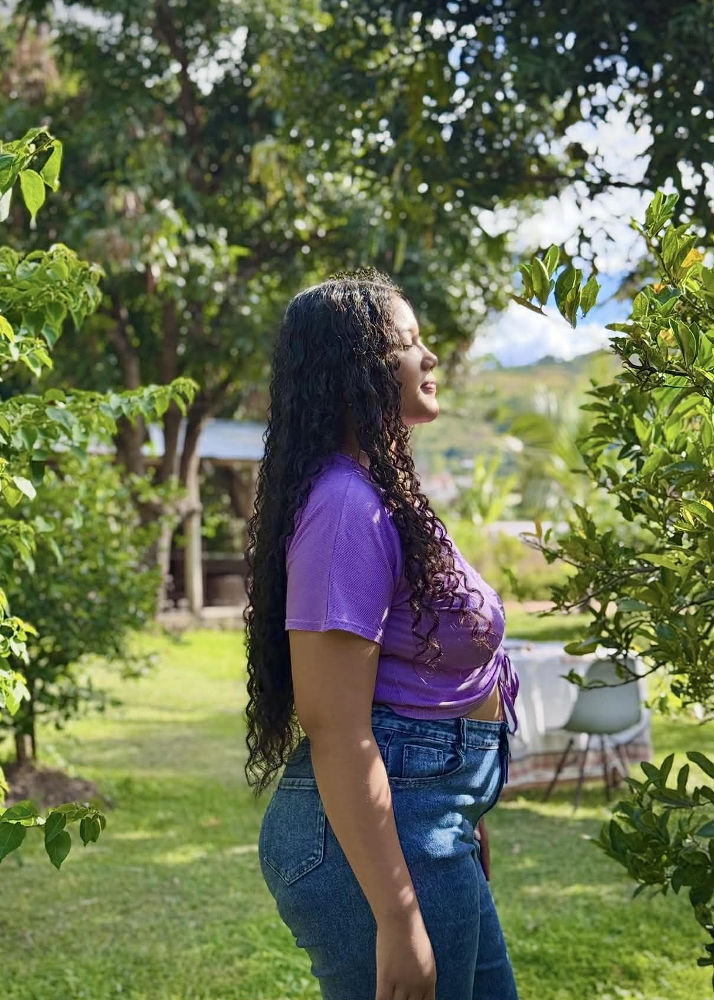
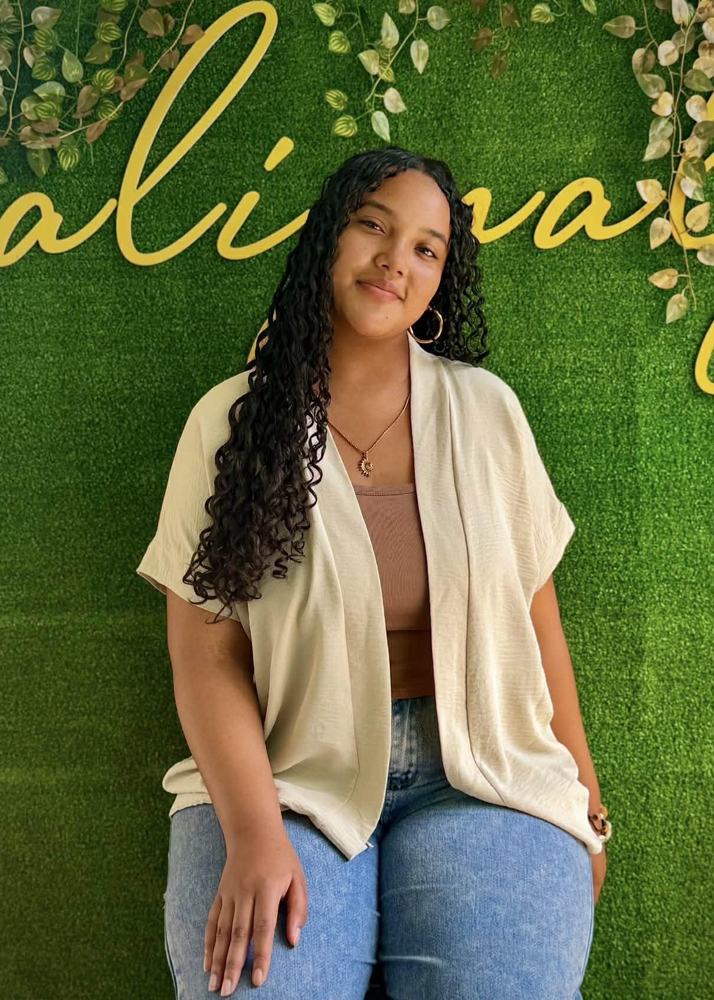
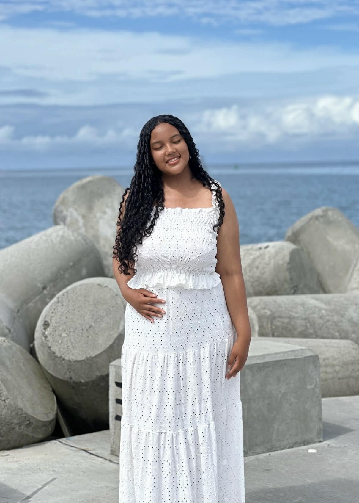
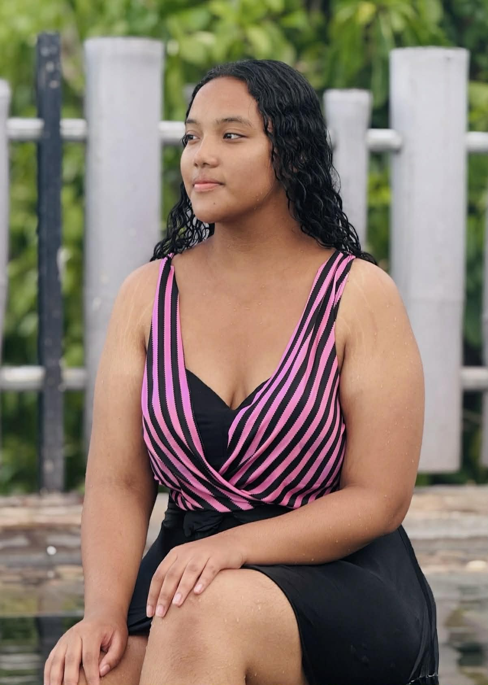

RABEZANAHARY Manohisoa Mahafaly
MM
Manohisoa Mahafaly Rabezanahary
Candidature Mannequin · CURVY MDG
Courte présentation
Je m’appelle Manou, j’ai 19 ans, et la mode fait partie de moi.
Chaque jour est une occasion de m’exprimer à travers mes tenues,
que je partage avec plaisir sur Instagram. Ce qui me touche
profondément chez CURVY MDG, c’est votre mission : représenter
les femmes curvy de Madagascar avec fierté et authenticité.
Cette démarche correspond exactement à mes valeurs: le body
positivity, l’inclusion, et l’idée que toutes les silhouettes
méritent d’être célébrées. Rejoindre cette aventure, ce serait
bien plus qu’un shooting : ce serait défendre quelque chose qui
me tient à cœur.
Pourquoi moi ?
Je suis naturellement à l’aise devant l’objectif. Poser, trouver
le bon angle, mettre en valeur une pièce sur une silhouette
curvy, c’est quelque chose qui vient instinctivement pour moi,
et ça se ressent dans les photos. Je sais comment mon corps
bouge, comment il se porte, et comment faire rayonner un
vêtement sur une vraie courbe. Ce serait un vrai atout pour vos
visuels. Je suis aussi quelqu’un qui apprend vite et qui
s’implique à fond dans ce qu’elle entreprend. J’observe,
j’assimile, et je donne le meilleur dès le départ. Sérieuse et
ponctuelle, je ne fais jamais les choses à moitié.
Ma plus grande qualité
J’adore acquérir de nouvelles compétences. Que ce soit de
nouvelles façons de poser, de nouveaux univers visuels ou de
nouveaux codes créatifs: je suis toujours partante pour
progresser et m’adapter. Cette curiosité et cette envie
d’apprendre, c’est ce qui me permet d’évoluer vite et de
m’améliorer à chaque expérience.
Tarifs & conditions
Ce poste serait ma première expérience professionnelle en tant
que mannequin. Je suis ouverte à en discuter selon les
conditions proposées par la marque.
Cachet
60 000 – 70 000 Ar
Pour une demi-journée de shooting
Usage des photos
Réseaux sociaux
Limité aux plateformes de la marque
Déplacement
À discuter
Selon le lieu dans Antananarivo
Flexibilité
Ouverte
On s'adapte ensemble




Me contacter
Merci beaucoup pour votre attention et n'hésitez pas à me joindre !
Téléphone
+261 34 12 761 61
Email
manohisoa.rabezanahary@gmail.com
Instagram
@luvley.manou
Voir le profil